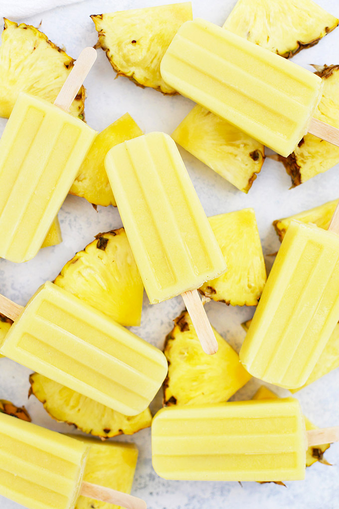

Dole Whip Popsicles

A homemade version of dole whip!
Makes about 10 Popsicles
Ingredients
- 4 1/2 cups diced pineapple (fresh or thawed frozen–not canned)
- 1/2 cup full-fat canned coconut milk (more, if needed)
- 1–2 Tbsp pure maple syrup or honey (optional)
Instructions
- Place pineapple, 1/2 cup coconut milk, and syrup/honey (if using) into your blender.
- Pour into popsicle mold, insert sticks, and freeze 3-4 hours or until completely firm.
- To release from popsicle mold, run mold under cool water for a few seconds and use a side-to-side motion to release popsicle from the mold
- Store leftover popsicles in an airtight bag or container in the freezer.
Return to main page